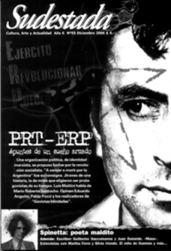

Buscar
Esa historia...
Edición N° 55
Diciembre 2006
Revista bimensual
Comprar edición impresaSumario
- PRT-ERP: Apuntes de un sueño armado
- Esa historia...
- Tester de Spinetta
- Martha Ferro: la justiciera del Gatillo Fácil
- MAUS: Sobrevivir para contarla
- Los premios: a propósito de Cortázar y Fresán
Compartir Articulo
En el prólogo al libro Los que luchan y los que lloran, aquel donde Jorge Ricardo Masetti narra su experiencia con los rebeldes cubanos en Sierra Maestra, Rodolfo Walsh es el encargado de señalar que el olvido, al fin de cuentas, es el precio a pagar por la derrota: "Que su nombre siga casi tan ignorado en su país como el pedazo de selva que esconde sus huesos era previsible para Jorge Masetti. Periodista, sabía cómo se construyen renombres y se tejen olvidos. Guerrillero, pudo presumir que si era derrotado, el enemigo sería el dueño momentáneo de su historia".
La definición se ocupaba de Masetti, cuyo cuerpo jamás pudo ser encontrado después de encabezar la primera guerrilla guevarista de la historia argentina, pero bien podría hacerse extensiva a toda una generación de jóvenes que, durante años, eligió asumir el protagonismo de su historia, a sabiendas del riesgo que significaba la derrota. "Vencer o morir por la Argentina" fue la consigna defendida por los militantes del PRT-ERP. Pero la derrota también significó la tergiversación de la historia, la mentira, el ocultamiento, la falsedad, el olvido. Eran, también, eslabones de una misma cadena.
Los vencedores imponen su derecho a recordar, cuentan con los medios para difundir sus hazañas, con el silencio como aliado para exterminar las voces opositoras, con la mentira como recurso práctico para ocultar miserias. Los vencidos se apropian de la memoria como náufragos sedientos de rebeldía, y juegan con ella a recuperar viejas lecciones, resisten al olvido, combaten la mentira, reconstruyen la historia. Su historia.
Con respecto a los años setenta, hay una historia que sigue viva. Uno puede toparse en cada momento con libros, documentales, revistas, investigaciones, debates, que retoman las heridas abiertas de aquellos años. Lejos de cualquier pretensión historicista, más lejos aún de pretender intervenir en un debate sobre errores y aciertos tácticos y estratégicos en una organización política, este número de Sudestada propone, simplemente, manifestarse en beligerancia contra aquellos que suponen que la derrota implica aceptar la rendición incondicional de las ideas. Y de los recuerdos.
Ni miradas vindicadoras acríticas ni absurdos arrepentimientos: lo que intentamos es impedir que la historia siga siendo patrimonio de los vencedores. Y decidirse a escuchar, otra vez, algunas de esas miles de voces que dejaron de lado la comodidad y la resignación, para asumir con valentía la decisión de intentar cambiarlo todo. Aún al precio de sus vidas.
Se han escrito balances y miradas integrales sobre aquellos años. Quizás la única manera de extraer enseñanzas sobre aquella experiencia decisiva, comience por recuperar jirones de una historia arrebatada a sangre y fuego. La de cientos de miles que lucharon para evitar este presente de injusticia que nos toca vivir. Por lo menos, podemos comenzar a saldar nuestra deuda con ellos desde estas páginas.
Comentarios

Sudestada
El colectivo de Revista Sudestada esta integrado por Ignacio Portela, Hugo Montero, Walter Marini, Leandro Albani, Martín Latorraca, Pablo Fernández y Repo Bandini.
Articulos más vistos


LIBRERÍA SUDESTADA

Colección infantil

Distribuidora de Libros

Suscripción

Sudestada en URUGUAY

Otros articulos de esta edición
PRT-ERP: Apuntes de un sueño armado
Una organización política, de identidad marxista, se propuso luchar por la revolución socialista. "A vencer o morir por la Argentina" ...
Martha Ferro: la justiciera del Gatillo Fácil
Como segunda parte del informe presentado en el número anterior sobre ¡Esto!, publicamos la entrevista a quien fuera cronista de ...
 Dossier
Dossier
Tester de Spinetta
El mundo creativo de Luis Alberto Spinetta, desde sus inicios, estuvo signado por la poesía y la imaginación. Con más ...
 Viñetas sueltas
Viñetas sueltas
MAUS: Sobrevivir para contarla
Precursora del espíritu que en 1986 invadió al cómic de superhéroes -y que le dio lugar a su adultez con ...
 Literatura
Literatura